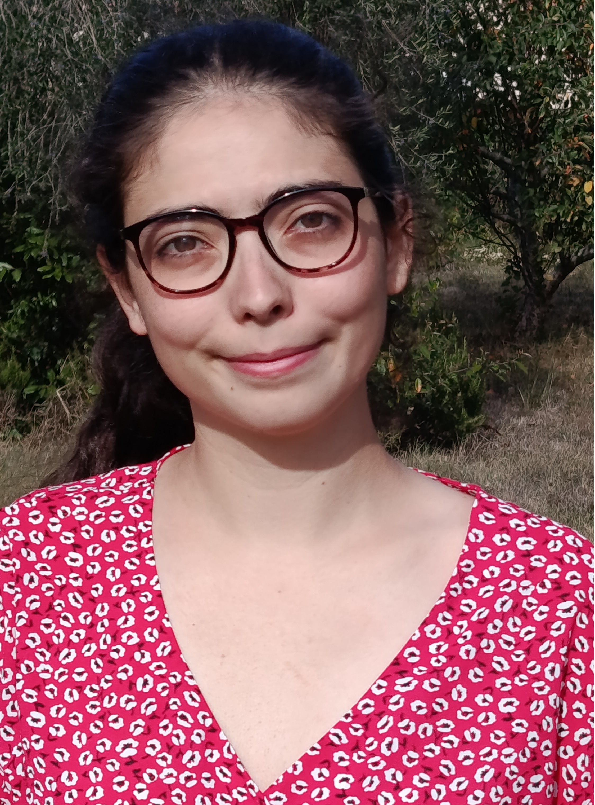

Python
SQL
Ada
Matlab
HTML
CSS
office suite
team work
adaptability
curiosity
I did a project on imperative programmation class about coding a program for founding a number chosen by the user by dichotomia.
I am actually on higher education on a french engineering school.
I did an intership during my second year of prépa on TéSA laboratory (Spatial and Aeronautics Telecommunications). The objective was to do a Python project for statistics class on 1st year MF2E (Fluid Mechanics, Energy and Environment) of ENSEEIHT.
I did a job shadowing on 11th grade on Thalès Alenia Space. It allowed me to discover what kind of job are possible after an engineer school, and view the clean rooms of the company.
I was activity leader on an children's activity centre during 3 summers, between 2023 and 2025, for the urban area of Montauban (France). I was with children under six.
French : native speaker
English : B2
Spanish : B1
French Sign Language (LSF) : A1
First choice : Universidad Complutense Madrid, Spain
I choose this university because I speak spanish, which is helpful for integrate myself. It offers a cursus on mathematics, another one on computing, and also a combined honours degree on mathematics and computing.
Second choice : Université de Sherbrooke, Canada
I choose this university because it has a various choice of class on computing department, and this allow me to learn things which are on another cursus than mine at ENSEEIHT. Moreover, I would love to discover the Canadian culture.
I participated three times at the "Futur proche" Festival. It's a day organized by the university and school of Toulouse in order to make students aware of environment. It allowed me to do activity with students of others career development, with other point of view about environment than that I listen usually.
I did many Fresk, the Climate one, the Biodiversity, the Water and the Planetary bounderies one.
I participated to the 2Tonnes Workshop, which enable us to calculate our carbon footprint and to see its development depending on our actions with the goal to have a carbon footprint under the 2 tonnes of CO2. It allow me to understand the impact of all our actions on our carbon footprint now and on the future.
I participated to 2 Clean Walk, once on Toulouse and the other on Castanet-Tolosan.
Thanks to the awareness of HVSS (Bullying, Violences Sexistes et Sexuelles) I saw the Trial of King Kong, an interactive play about potential problem which can appear during the integration.
I pratice judo refereeing on different level between regional and national. I have been promoted regional referee on July 2026, and on the sports season 2025-26 I had been selected to referee France championship under-16.
Between 2020 and 2025 I helped to supervise the judo class of the children between 4 and 10 years old on my club. I also pass the diploma of club assistant in order that really help the teachers.
I received on November 2024 a local reward of the FFMJSEA (French Federation of Medalists for Youth, Sports, and Community Engagement) for my investment on the judo club.
On May 2024 I received a diploma of part of the FFJDA (French Judo Federation) for the help I gave to my club and my engagement on the refeering.
I ended my third education in conservatory with the optention of the BEM (Brevet of Musical Class) on music theory and on flute.
I played flute during 7 years on conservatory, with group pratice at the orchestra or in group. This year I join the marching band of the school.
I am self-taugh piano.
I pratice judo since 17 years, and I am black belt, first dan. I pratice it by fighting, but also by refereeing.
I pratice tennis since 11 years and I am 30/5. I pratice it during team competition.
e-mail : lucie.olive@etu.toulouse-inp.fr
Phone number : +33 7 69 56 48 61